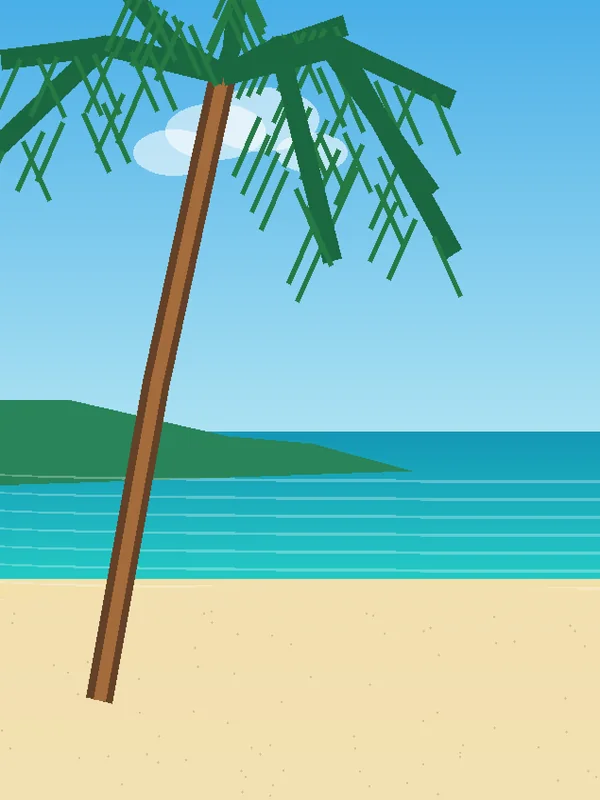
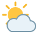

Data
- Area:
- 48,671 km²
- Capital:
- Santo Domingo
- Language:
- Spanish
- Currency:
- Dominican Peso (DOP)
- Time Zone:
- UTC−4
- Calling Code:
- +1
Weather

- Temperature:
- 28 °C
- Conditions:
- Partly Cloudy
- Wind:
- 12 km/h
- Wind Chill:
- N/A

